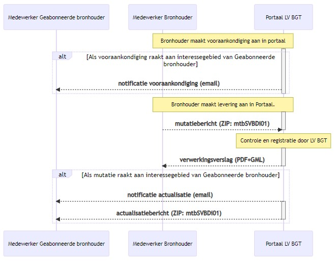
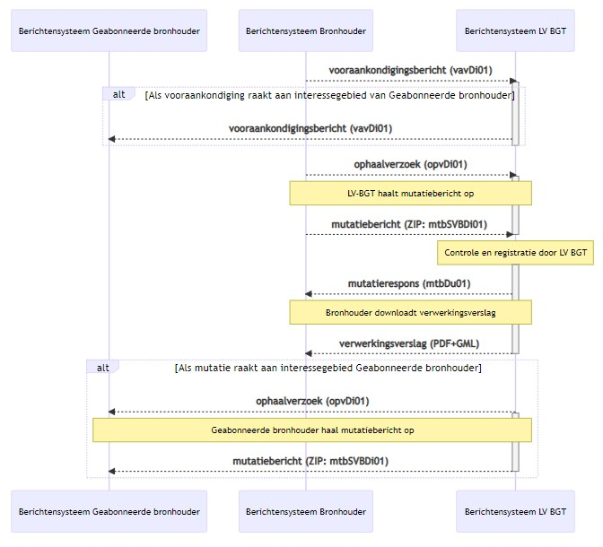

Creative Commons Attribution 4.0 International Public License (CC-BY)
Abstract
Dit document beschrijft een werkafspraak voor het BGT berichtenverkeer als gevolg van de overgang van de functionaliteit van systeem BRAVO naar Kadaster.
Status of This Document
This section describes the status of this document at the time of its publication. Other documents may supersede this document. A list of current Geonovum publications and the latest revision of this document can be found via https://www.geonovum.nl/geo-standaarden/alle-standaarden(in Dutch).
Dit is een definitief concept van de nieuwe versie van de werkafspraak. Wijzigingen naar aanleiding van consultaties zijn doorgevoerd.
1. Aanleiding
In de opbouwfase van de BGT leverden bronhouders via het systeem BRAVO van het
SVB-BGT hun initiële levering en mutatielevering aan de Landelijke Voorziening
BGT (LV-BGT).
Met de afbouw van het bureau SVB-BGT wordt de functionaliteit van het systeem
BRAVO overgedragen aan het Kadaster. Dit betekent dat bronhouder per 1 november
2022 direct aanlevert aan de LV-BGT, zonder tussenkomst van BRAVO.
Dit heeft gevolgen voor het BGT berichtenverkeer zoals dat nu in de Standaard
BGT berichtenverkeer is vastgelegd. Middels deze werkafspraak worden de
wijzigingen in het BGT berichtenverkeer vastgelegd, waarbij het uitgangspunt is
dat de impact op de bronhouders en hun software zo laag mogelijk wordt gehouden.
2. Werkafspraak
De volgende werkafspraak geldt voor de BGT keten voor de uitwisseling van
berichten tussen bronhouder en de Landelijke Voorziening BGT (LV-BGT):
Het portaal en berichtensysteem BRAVO van SVB-BGT wordt geschrapt in het
BGT berichtenverkeer. De communicatie / uitwisseling tussen bronhouders en
LV-BGT is in het vervolg rechtstreeks, zonder tussenkomst van het systeem
BRAVO van SVB-BGT.*
Deze werkafspraak treedt per 1 november 2022 inwerking.
Dit betekent de volgende wijzigingen voor het BGT berichtenverkeer:
Vooraankondigen
Bronhouder maakt vooraankondiging aan via Portaal LV-BGT of stuurt
vooraankondigingsbericht aan Berichtensysteem LV-BGT.
Bronhouder neemt in de stuurgegevens van het vooraankondigingsbericht
(vavDi01) de gegevens van SVB-BGT of LV-BGT op als «ontvanger».
LV-BGT ontvangt en verwerkt het vooraankondigingsbericht (vavDi01).
LV-BGT notificeert geraakte bronhouder rechtstreeks van vooraankondiging(en)
binnen zijn interessegebied, middels een email of geautomatiseerd bericht.
LV-BGT neemt in de stuurgegevens van het vooraankondigingsbericht (vavDi01)
de gegevens van geraakte bronhouder op als «ontvanger».
Tot 1 juli 2023 stuurt LV-BGT in de stuurgegevens van het bericht als «zender» de gegevens van SVB-BGT. Vanaf 1 juli 2023 stuurt LV-BGT in de stuurgegevens van het bericht als «zender» de eigen stuurgegevens.
Aanleveren van mutaties en terugkoppeling van werking
Bronhouder levert mutaties rechtstreeks aan LV-BGT van het Kadaster.
Bronhouder levert een mutatiebericht van het type mtbSVBDi01 aan LV-BGT. Het
mutatiebericht tussen SVB-BGT en LV-BGT (mtbLVDi01) vervalt in de Standaard
BGT berichtenverkeer.
Bronhouder neemt in de stuurgegevens van het ophaalverzoek (opvDi01) en
mutatiebericht (mtbSVBDi01) de gegevens van SVB-BGT of LV-BGT op als «ontvanger».
LV-BGT stuurt het verwerkingsresultaat middels emailnotificatie of
geautomatiseerd reponsbericht (mtbDu01) rechtstreeks naar bronhouder.
LV-BGT neemt in de stuurgegevens van het responsbericht (mtbDu01) de
gegevens van bronhouder op als «ontvanger».
Tot 1 juli 2023 stuurt LV-BGT in de stuurgegevens van het bericht als «zender» de gegevens van SVB-BGT. Vanaf 1 juli 2023 stuurt LV-BGT in de stuurgegevens van het bericht als «zender» de eigen stuurgegevens.
Actualiseren
Bronhouder actualiseert rechtstreeks via de LV-BGT. Bronhouder kan via het
Portaal LV-BGT een interessegebied aanmaken of uploaden (GML).
LV-BGT notificeert geraakte bronhouder rechtstreeks van mutaties binnen zijn
interessegebied, middels een email of geautomatiseerd bericht.
LV-BGT neemt in de stuurgegevens van het ophaalverzoek (opvDi01) en
mutatiebericht (mtbSVBDi01) de gegevens van bronhouder op als «ontvanger».
Tot 1 juli 2023 stuurt LV-BGT in de stuurgegevens van het bericht als «zender» de gegevens van SVB-BGT. Vanaf 1 juli 2023 stuurt LV-BGT in de stuurgegevens van het bericht als «zender» de eigen stuurgegevens.
De gewijzigde uitwisseling tussen bronhouder en LV-BGT voor handmatige upload/download wordt weergegeven in onderstaand sequentiediagram.

De gewijzigde uitwisseling tussen bronhouder en LV-BGT voor automatisch berichtenverkeer wordt weergegeven in onderstaand sequentiediagram.

Vervallen initieel leveren
Omdat de opbouwfase van de BGT is afgerond wordt in deze werkafspraak ook
geregeld dat alle berichten en scenario’s voor het initieel leveren van BGT
gegevens komen te vervallen:
Processtap Assembleren vervalt in het BGT berichtenverkeer.
Scenario’s in hoofdstuk 3 Initieel leveren vervallen in zijn geheel.
Bericht actualisatiebericht na assemblage (mtoDi01) vervalt.
3. Impact
Er wordt een overgangsperiode gehanteerd voor de stuurgegevens van het bericht:
Tot 1 juli 2023 stuurt LV-BGT in de stuurgegevens van het bericht als
«zender»de gegevens van SVB-BGT.
Vanaf 1 juli 2023 stuurt LV-BGT in de stuurgegevens van het bericht
«zender»de eigen stuurgegevens.
De volgende impact wordt voorzien voor de schakels in de BGT keten.
Bronhouder dient (mogelijk) de stuurgegevens voor automatisch
berichtenverkeer in de bronhoudersoftware opnieuw te (laten) configureren om
LV-BGT als «zender»in het bericht te kunnen ontvangen.e
Softwareleverancier dient -op verzoek van bronhouder- de stuurgegevens
voor automatisch berichtenverkeer opnieuw te configureren conform hierboven
beschreven.
SVB-BGT zet systeem BRAVO uit.
LV-BGT implementeert het zenden en ontvangen van de berichten van
voorheen BRAVO/SVB-BGT in de LV-BGT.
LV-BGT realiseert een portaal voor het handmatig aanmaken van
interessegebieden voor actualisaties en vooraankondigingen.
(Afnemer heeft geen impact.)
4. Registratie
Een melding over dit onderwerp is opgenomen in het registratiesysteem dat
Geonovum voor het beheer van de BGT|IMGeo standaarden gebruikt. Het issue is
bekend onder: Github #22.
Een geconsolideerde
versie waarin de
wijzigingen op het BGT berichtenverkeer zijn verwerkt, wordt ter informatie
gepubliceerd via de werkomgeving van de BGT|IMGeo standaarden. Deze
geconsolideerde versie krijgt geen formele status.